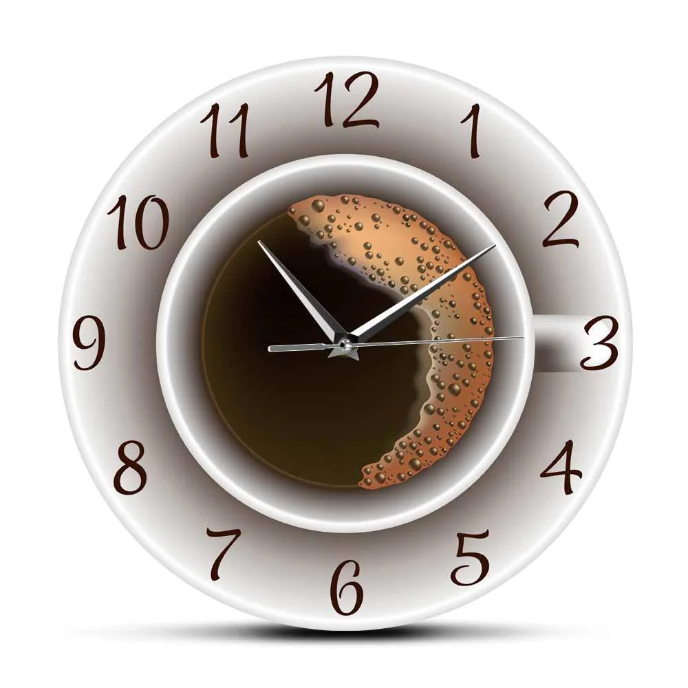

<ion-content>
  <div class="retour">
    <!-- <ion-icon style="margin-left: -95px; width: 30px;"  name="arrow-undo-outline"></ion-icon> -->
    
  </div>
  <div id="container" style="display: grid;">
   
    <div class="img">
      
    </div>
    <div style="margin-top: -8vh;">
      <h2 style="color: #005B2F;margin-top: 83px; text-align: center;font-weight: 900;">Horaire</h2>
    </div>
  </div>
  
  <ion-item  *ngFor="let element of data">
   
    <ion-label>{{element.nom}}</ion-label> <ion-label> {{element.time}}</ion-label>
    <ion-icon name="create-outline"  (click)="presentAlert()"  style="color: #005B2F;" ></ion-icon>
    
  </ion-item>
  <ion-alert
  trigger="present-alert"
  header="Modifier l'heure"
  [buttons]="['alertButtons']"
  [inputs]="alertInputs"
></ion-alert>
</ion-content>

<!-- Modal -->


<!-- </ion-content> -->

